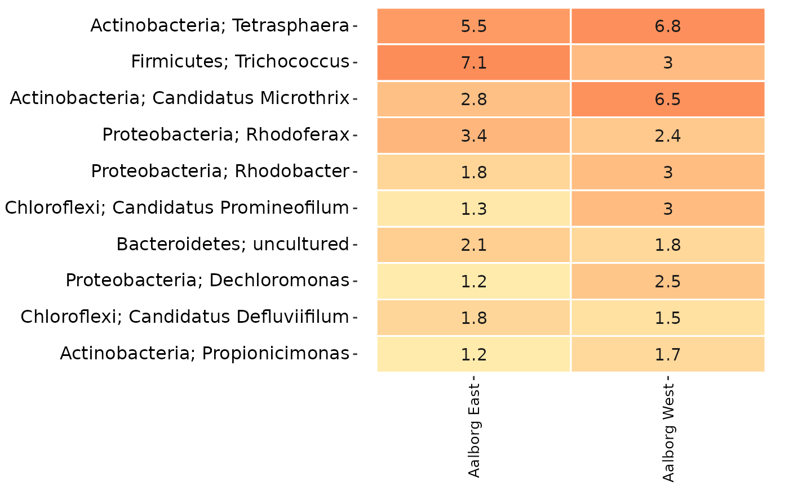
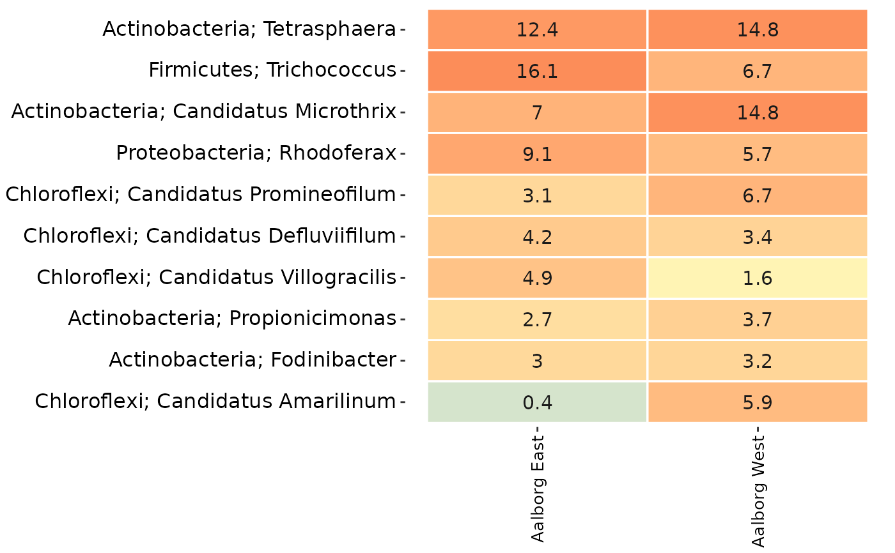
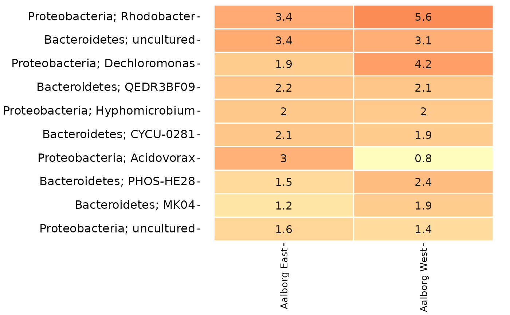

Subsets the data in ampvis2 objects based on taxonomy and returns the subsetted object.
amp_subset_taxa(data, tax_vector = NULL, normalise = FALSE, remove = FALSE)
| data | (required) Data list as loaded with |
|---|---|
| tax_vector | A character vector with the exact names of taxa to keep. This vector is matched as-is on all taxonomic ranks, so remember to use prefixes if used in your taxonomy, e.g. |
| normalise | (logical) Normalise the OTU read counts to 100 (ie percent) per sample BEFORE the subset. (default: |
| remove | (logical) If set to TRUE, then the taxa matching the provided vector will be removed instead of being the only ones kept in the data. (default: |
A modifed ampvis2 object
The taxonomy subset is done by providing a tax_vector of taxa names which are then matched to the taxonomy table, where all other taxa not matching the tax_vector are removed. If remove = TRUE, then the matching taxa are the ones being removed instead. The taxa names in tax_vector will be matched in all columns of the taxonomy table.
By default the raw read counts in the abundance matrix are normalised (transformed to percentages) by some plotting functions automatically (for example amp_heatmap, amp_timeseries, and more). This means that the relative abundances shown will be calculated based on the remaining taxa after the subset, not including the removed taxa, if any. To circumvent this, set normalise = TRUE when subsetting with the amp_subset_taxa and amp_subset_samples functions, and then set raw = TRUE in the plotting function. This will transform the OTU counts to relative abundances BEFORE the subset, and setting raw = TRUE will skip the transformation in the plotting function, see the example below.
data("MiDAS") subsettedData <- amp_subset_samples(MiDAS, Plant %in% c("Aalborg West", "Aalborg East"), normalise = TRUE ) amp_heatmap(subsettedData, group_by = "Plant", tax_aggregate = "Phylum", tax_add = "Genus", normalise = FALSE )
Kasper Skytte Andersen ksa@bio.aau.dk
Mads Albertsen MadsAlbertsen85@gmail.com
Rasmus Hansen Kirkegaard rhk@bio.aau.dk
# Load example data data("AalborgWWTPs") # An overview heatmap of the data: amp_heatmap(AalborgWWTPs, tax_aggregate = "Genus", group_by = "Plant", tax_add = "Phylum" )# Remove all taxa except the phyla Chloroflexi and Actinobacteria # and the Genera Rhodoferax and Trichococcus: tax_vector <- c( "p__Chloroflexi", "p__Actinobacteria", "g__Rhodoferax", "g__Trichococcus" ) AalborgWWTPs_subset <- amp_subset_taxa(AalborgWWTPs, tax_vector = tax_vector )#> #> #># The resulting subset: amp_heatmap(AalborgWWTPs_subset, tax_aggregate = "Genus", group_by = "Plant", tax_add = "Phylum" )# Or if remove = TRUE then the taxa in tax_vector are the ones being removed: AalborgWWTPs_subset <- amp_subset_taxa(AalborgWWTPs, tax_vector = tax_vector, remove = TRUE )#> #> #># The resulting subset: amp_heatmap(AalborgWWTPs_subset, tax_aggregate = "Genus", group_by = "Plant", tax_add = "Phylum" )